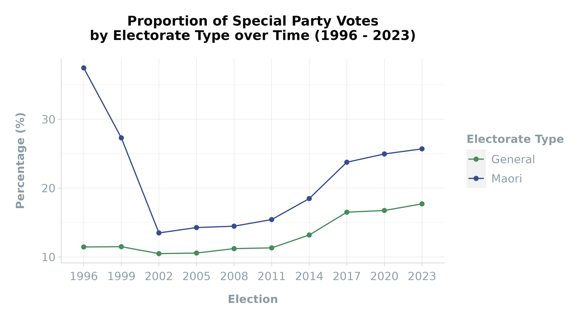

This article provides an in-depth exploration of the vote_type
dataset, a key component of the scgElectionsNZ package,
which delves into the intricacies of voting patterns in New Zealand’s
elections.
Vote Type
The vote_type
dataset captures the complexities of the New Zealand electoral process
by categorising votes based on their validity (Disallowed, Informal,
Valid) and method (Ordinary, Special - NZ, Special - Overseas), across
electorates, ballot types (Candidate and Party), and elections.
Loading the Data
Begin by loading the vote_type
dataset and examining its structure:
| Election | Ballot | Electorate | Validity | Method | Votes |
|---|---|---|---|---|---|
| 2023 | Candidate | Auckland Central | Disallowed | Ordinary | 0 |
| 2023 | Candidate | Auckland Central | Disallowed | Special | 988 |
| 2023 | Candidate | Auckland Central | Informal | Ordinary | 160 |
| 2023 | Candidate | Auckland Central | Informal | Special - NZ | 135 |
| 2023 | Candidate | Auckland Central | Informal | Special - Overseas | 4 |
| 2023 | Candidate | Auckland Central | Valid | Ordinary | 23227 |
Augmenting Data with Regional Information
Enhance the dataset by adding regional data for more a detailed
analysis using the add_data()
function:
| Electorate | Election | Ballot | Validity | Method | Votes | Region |
|---|---|---|---|---|---|---|
| Albany | 1999 | Party | Informal | Special - Overseas | 0 | Auckland |
| Albany | 1999 | Party | Informal | Special - Overseas | 0 | Auckland |
| Albany | 1996 | Party | Informal | Special - NZ | 11 | Auckland |
| Albany | 1996 | Party | Informal | Special - NZ | 11 | Auckland |
| Albany | 1999 | Party | Disallowed | Special | 592 | Auckland |
| Albany | 1999 | Party | Disallowed | Special | 592 | Auckland |
Visualising Special Votes by Region
Create a visualisation to illustrate the proportion of Party Special Declaration Votes by Region over time.
Prepare Data
# Prepare data
df <- df %>%
filter(Ballot == "Party") %>% # Include Party Votes only
mutate(Method = ifelse(Method == "Ordinary", Method, "Special")) %>%
# Get grouped Votes
group_by(Election, Region, Method) %>%
summarise(Votes = sum(Votes), .groups = 'drop') %>%
ungroup() %>%
# Get grouped Percentage
group_by(Election, Region) %>%
mutate(Percentage = round(Votes / sum(Votes) * 100, 2)) %>%
ungroup() %>%
filter(Method == "Special") %>% # Get Special Votes only
arrange(-Percentage)
# View data
head(df)| Election | Region | Method | Votes | Percentage |
|---|---|---|---|---|
| 2023 | Auckland | Special | 1414386 | 22.32 |
| 2020 | Auckland | Special | 1402180 | 20.79 |
| 2017 | Auckland | Special | 1377902 | 20.42 |
| 2017 | Wellington / Wairarapa | Special | 477612 | 18.05 |
| 2023 | Wellington / Wairarapa | Special | 439248 | 17.82 |
| 2023 | Waikato | Special | 440058 | 17.80 |
Create Plot
Use the gghighlight()
function from the gghighlight package to highlight single
regions in facets and the theme_scg()
function from the scgUtils package can be used to customise
the plot’s appearance:
df %>%
ggplot(aes(x = as.character(Election), y = Percentage,
group = Region, colour = Region)) +
geom_line() + # Add lines
geom_point() + # Add points
gghighlight::gghighlight(use_direct_label = F) + # Highlight by faceted Regions
facet_wrap(. ~ reorder(Region, -Percentage)) +
scale_colour_manual(values = c("#374e8e", "#e3b13e", "#df7c18", "#ac004f", # add colours by Region
"#704600", "#1b87aa", "#478c5b"),
breaks = c("South Island", "Wellington / Wairarapa",
"Taranaki / Whanganui / Manawatu",
"Bay of Plenty / Hawke's Bay / Gisborne",
"Waikato", "Auckland", "Northland")) +
labs(title = "Proportion of Special Party Votes\nby Region over Time (1996 - 2023)",
y = "Percentage (%)\n",
x = "Election") +
scgUtils::theme_scg() +
theme(axis.text.x = element_text(angle = 45, vjust = 0.5),
legend.position = "none")
As is evident, there are higher proportions of special votes in 1996
and 1999. This is particularly the case for Northland and Taranaki /
Whanganui / Manawatu where the number of Maori to General seats is
higher. In addition, the urban region of Auckland has a significantly
higher proportion of special votes compared with other regions.
Exploring the Data
To understand the differences in special votes, break down the special votes by method and validity.
Overseas Voting
To do this, first examine the
proportion of overseas votes by electorate, focusing on the valid and
informal votes:
vote_df %>%
filter(Election == 2023, Validity != "Disallowed") %>% # Only valid and informal votes
# Get grouped Votes
group_by(Ballot, Electorate, Method) %>%
summarise(Votes = sum(Votes), .groups = 'drop') %>%
ungroup() %>%
# Get grouped Percentage
group_by(Ballot, Electorate) %>%
mutate(Percentage = round(Votes / sum(Votes) * 100, 2)) %>%
ungroup() %>%
# View only Special - Overseas results
filter(Method == "Special - Overseas") %>%
arrange(-Percentage) %>% # rank by percentage
head(n = 10)| Ballot | Electorate | Region | Method | Votes | Percentage |
|---|---|---|---|---|---|
| Candidate | Wellington Central | Wellington / Wairarapa | Special - Overseas | 39200 | 8.62 |
| Candidate | Epsom | Auckland | Special - Overseas | 34100 | 8.50 |
| Candidate | Auckland Central | Auckland | Special - Overseas | 28880 | 8.31 |
| Party | Wellington Central | Wellington / Wairarapa | Special - Overseas | 33120 | 7.76 |
| Party | Auckland Central | Auckland | Special - Overseas | 22390 | 6.72 |
| Candidate | Mt Albert | Auckland | Special - Overseas | 22374 | 6.33 |
| Party | Epsom | Auckland | Special - Overseas | 23540 | 6.21 |
| Candidate | Rongotai | Wellington / Wairarapa | Special - Overseas | 26000 | 6.12 |
| Candidate | Tamaki | Auckland | Special - Overseas | 23460 | 5.67 |
| Candidate | North Shore | Auckland | Special - Overseas | 21960 | 5.36 |
The table above shows that the urban electorates within Auckland had
the greatest number of overseas voters, likely pushing up the special
vote count for the region
Disallowed Votes
Next, gain insights into the
percentage of disallowed votes by electorate and ballot type for the
2023 election:
vote_df %>%
add_data(output = "type") %>%
filter(Election == 2023) %>% # Get 2023 Election data only
# Get grouped Votes
group_by(Ballot, Electorate, Electorate_Type, Validity) %>%
summarise(Votes = sum(Votes), .groups = 'drop') %>%
ungroup() %>%
# Get grouped Percentage
group_by(Ballot, Electorate) %>%
mutate(Percentage = round(Votes / sum(Votes) * 100, 2)) %>%
ungroup() %>%
# View only Disallowed results
filter(Validity == "Disallowed") %>%
arrange(-Percentage) %>% # rank by percentage
head(n = 10)| Ballot | Electorate | Electorate_Type | Validity | Votes | Percentage |
|---|---|---|---|---|---|
| Candidate | Port Waikato | General | Disallowed | 4824 | 100.00 |
| Candidate | Hauraki-Waikato | Maori | Disallowed | 10602 | 6.59 |
| Candidate | Tamaki Makaurau | Maori | Disallowed | 13992 | 6.39 |
| Candidate | Manurewa | General | Disallowed | 16520 | 5.38 |
| Candidate | Te Tai Tokerau | Maori | Disallowed | 15530 | 5.30 |
| Candidate | Waiariki | Maori | Disallowed | 13518 | 4.93 |
| Candidate | Te Tai Hauauru | Maori | Disallowed | 13240 | 4.82 |
| Candidate | Ikaroa-Rawhiti | Maori | Disallowed | 11196 | 4.55 |
| Candidate | Panmure-Otahuhu | General | Disallowed | 2832 | 4.54 |
| Candidate | Te Tai Tonga | Maori | Disallowed | 11910 | 4.16 |
The table above shows the highest proportion of disallowed votes ranked by electorate. Port Waikato shows 100% of the total vote was disallowed. This was due to the ACT Party candidate dying before polling day and thus the poll cancelled for the Candidate Vote (the Party Vote proceeded).
Of note is that the top ten includes all of the Māori electorates.
This is likely due to the higher proportion of Māori voters casting
special votes. Special votes have an added level of complexity and
requirements compared with ordinary votes and thus are more likely to be
disallowed.
Visualising Special Votes by Type
And finally, to understand what is driving the higher proportions in
1996 and 1999, add the electorate type, again using the add_data()
function: Prepare Data
# Add Electorate Type column
df <- add_data(vote_df, output = "type")
# Prepare data
df <- df %>%
filter(Ballot == "Party") %>%
mutate(Method = ifelse(Method == "Ordinary", Method, "Special")) %>%
group_by(Election, Electorate_Type, Method) %>%
summarise(Votes = sum(Votes), .groups = 'drop') %>%
ungroup() %>%
group_by(Election, Electorate_Type) %>%
mutate(Percentage = round(Votes / sum(Votes) * 100, 2)) %>%
ungroup() %>%
filter(Method == "Special") %>%
arrange(-Percentage)
# View data
head(df)| Election | Electorate_Type | Method | Votes | Percentage |
|---|---|---|---|---|
| 1996 | Maori | Special | 297531 | 41.88 |
| 1999 | Maori | Special | 251558 | 27.09 |
| 2023 | Maori | Special | 430250 | 25.45 |
| 2020 | Maori | Special | 420225 | 24.74 |
| 2017 | Maori | Special | 352229 | 23.59 |
| 2014 | Maori | Special | 254629 | 18.39 |
Create Plot
Visualise the proportion of
Party Special Declaration Votes by Electorate Type over time.
df %>%
ggplot(aes(x = as.character(Election), y = Percentage,
group = Electorate_Type,
colour = Electorate_Type)) +
geom_line() +
geom_point() +
scale_colour_manual(values = scgUtils::colour_pal("catSimplified")) +
labs(title = "Proportion of Special Party Votes\nby Electorate Type over Time (1996 - 2023)",
y = "Percentage (%)\n",
x = "Election",
colour = "Electorate Type") +
scgUtils::theme_scg() This graph shows the significantly higher proportions of special votes cast in Māori electorates compared with General electorates. The cause of this has been noted in a parliamentary research paper which explained that due to the geographic size of the Māori electorates and the limited number of Māori polling booths, these voters are required to travel further to cast an ordinary vote. As such, Māori voters were more likely to cast a special vote at General electorate polling places.
Between 1993 and 1999, the number of polling places in which Māori voters could cast their vote was increased from 534 to 1,203. This was seen to aid in the reduction of special votes.